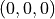
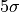
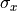
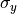
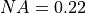
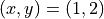

Sources¶
All the photon packet sources that can be used in the Monte Carlo
simulator are implemented by subclassing
xopto.mcml.mcsource.base.Source. The
xopto.mcml.mcsource module includes a number of commonly
used sources:
xopto.mcml.mcsource.point.IsotropicPointimplements an isotropic point source.xopto.mcml.mcsource.line.Lineimplements an infinitely narrow and collimated source.xopto.mcml.mcsource.uniformbeam.UniformBeamimplements a uniform collimated source of elliptical cross section.xopto.mcml.mcsource.gaussianbeam.GaussianBeamimplements a collimated Gaussian source of elliptical cross section.xopto.mcml.mcsource.fibermodule implements several optical fiber sources:xopto.mcml.mcsource.fiber.UniformFiberimplements a fiber source that emits uniformly within the NA from each point of the fiber core surface.xopto.mcml.mcsource.fiber.UniformFiberLutimplements a fibersource that follows a measured or nonparametric angular emission.
xopto.mcml.mcsource.fiber.LambertianFiberimplements a fiber source that emits like a Lambertian surface within the NA of the core.
xopto.mcml.mcsource.fibernimodule implements the same sources as thexopto.mcml.mcsource.fibermodule but for a normal source incidence.xopto.mcml.mcsource.rectangularmodule implements the following sources:xopto.mcml.mcsource.rectangular.UniformRectangularimplements a rectangular source that emits uniformly within the NA from each point of the source surface.xopto.mcml.mcsource.rectangular.UniformRectangularLutimplements a rectangular source that follows a measured or nonparametric angular emission characteristics.xopto.mcml.mcsource.rectangular.LambertianRectangularimplements a rectangular source that emits like a Lambertian surface within the NA of the source.
All sources have a position attribute that defines the position of the
geometrical center of the source. This position is used as a reference point
for terminating photon packets that leave the simulation radius set
through the xopto.mcml.mc.Mc.rmax property.
Note that the refractive index of the source (not all the sources implement this property) is used to compute the initial photon packet weight (the specular reflectance at the source-sample boundary is subtracted from 1.0). The sources that do not implement a refractive index, inherit the value from the surrounding medium.
The UniformBeam,
xopto.mcml.mcsource.gaussianbeam.GaussianBeam and all the
fiber sources
Isotropic point¶
This source can be placed inside and above the sample. The following example shows how to create an isotropic point source 5 mm bellow the top surface of the sample:
from xopto.mcml import mc
src = mc.mcsource.IsotropicPoint((0.0, 0.0, 5.0e-3))
If the source is positioned above the sample (z <= 0), the entry point into the sample is determined by propagating the packet from the source position along the launch direction. The MC simulation will start after refracting the packet into the sample and subtracting the specular reflectance at the sample boundary from the initial weight of the packet. If the photon packet does not intersect the sample, the initial weight will be set to 0 (reflectance to 1) and the packet will be launched with the z coordinate set to 0. If a specular surface detector is used, the reflectance is deposited into that detector. Such zero-weight packets are immediately terminated and have no contribution to the fluence and surface detectors, however will be included in the trace (have no effect on the sampling volume or other trace-based analysis due to the zero-weight). Note that in case the position lies within the sample (z > 0), it will be used as the launch point and the packets will retain the full initial weight.
Line¶
The following example shows how to create a Line source with a 10 o incidence (tilted along the x axis) that is located at the center of the top sample surface :
from xopto.mcml import mc
import numpy as np
ang = np.deg2rad(10.0)
src = mc.mcsource.Line(direction=(np.sin(ang), 0.0, np.cos(ang)))
The packets are always launched from the top surface of the sample. The source position and direction are used to determine the launch point at the sample surface. From there, the packet is first refracted into the sample and the surface reflectance is subtracted from the initial packet weight. If a specular surface detector is used, the reflectance is deposited into that detector.
Uniform beam¶
A uniform beam of elliptical cross section can be created with
xopto.mcml.mcsource.uniformbeam.UniformBeam source. The beam
diameter along the x and y axis is controlled by the diameter parameter.
In case the diameter is give as a scalar float value, the cross
section of the beam becomes circular. Note that the diameters are applied in
the coordinate system of the beam. Optionally, the beam can be repositioned
and tilted through the position and direction parameters.
The following example creates a uniform beam with a perpendicular incidence
and a circular cross section diameter of 1 mm.
from xopto.mcml import mc
src = mc.mcsource.UniformBeam(1.0e-3)
The packets are always launched from the top surface of the sample. The source position and direction are used to determine the launch point at the sample surface. From there, the packet is first refracted into the sample and the surface reflectance is subtracted from the initial packet weight. If a specular surface detector is used, the reflectance is deposited into that detector.
Gaussian beam¶
A Gaussian beam can be created with
xopto.mcml.mcsource.gaussianbeam.GaussianBeam source. The standard
deviation ( ) of the beam can be independently set along
the x and y axis.
In case is give as a scalar
) of the beam can be independently set along
the x and y axis.
In case is give as a scalar float value, the value is
applied along the x and y axis. The beam is clipped at a distance of
 from the beam axis. The clip distance can be customized through
the clip parameter. Note that is applied in
the coordinate system of the beam. Optionally, the beam can be repositioned
and tilted through the position and direction parameters.
The following example creates a
GaussianBeam source with a
perpendicular incidence and with  1 mm and
 2 mm.
from xopto.mcml import mc
src = mc.mcsource.GaussianBeam([1.0e-3, 2.0e-3])
The packets are always launched from the top surface of the sample. The source position and direction are used to determine the launch point at the sample surface. From there, the packet is first refracted into the sample and the reflectance is subtracted from the initial packet weight. If a specular surface detector is used, the reflectance is deposited into that detector.
Fiber¶
This example shows how to create an optical fiber source with an ,
a fused silica core of diameter 200 μm and outer diameter of the
cladding 220 μm. Note that in this example we also use the
xopto.materials.ri module to calculate the refractive index of
fused silica at 550 nm and the xopto.mcbase.mcutil.fiber module for
creating a multimode fiber MultimodeFiber.
from xopto.materials.ri
from xopto.mcml import mc
from xopto.mcml.mcutil import fiber
fib = fiber.MultimodeFiber(
dcore=200e-6,
dcladding=220e-6,
ncore=ri.glass.fusedsilica.default(550e-9),
na=0.22
)
src = mc.mcsource.UniformFiber(fib)
Any of the source parameters can be accessed and changed through the
class properties. In the following example we change the  and
the diameters of the fiber core and cladding.
and
the diameters of the fiber core and cladding.
src.fiber.na = 0.23
src.fiber.dcladding = 420e-6
src.fiber.dcore = 400e-6
The packets are always launched from the top surface of the sample. The fiber position and direction are used to determine the launch point at the sample surface. If the incidence is not perpendicular, the cross-section of the fiber still forms a tight contact with the sample surface (the fiber is cut at an angle and has an elliptic cross-section). From there, the packet is launched according to the NA of the fiber core and the refractive index of the sample. The reflectance at the fiber core-sample boundary is subtracted from the initial packet weight. If a specular surface detector is used, the reflectance is deposited into that detector.
Rectangular¶
Rectangular sources are similar to optical fiber sources, however with a rectangular emission surface:
xopto.mcml.mcsource.rectangular.UniformRectangularemits uniformly within the NA of the source from each point of the source surface.xopto.mcml.mcsource.rectangular.LambertianRectangularemits like a Lambertian surface within the NA of the source.xopto.mcml.mcsource.rectangular.UniformRectangularLutfollows a nonparametric/measured angular emission characteristics.
The following example creates a
UniformRectangular source of
size  mm, NA 0.22 and refractive index 1.452.
from xopto.mcml import mc
mc.UniformRectangular(1.0e-3, 2.0e-3, n=1.452, na=0.22)